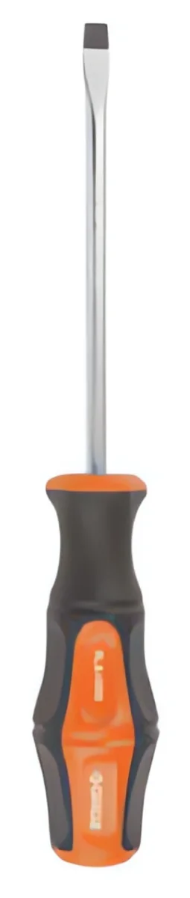

GROZ · Automotive Tools & Accessories
Screwdrivers Cushion Grip
CAT NR SCDR/R/T15/100 · ORD NR 36311
| CAT NR (catalogue number) | SCDR/R/T15/100 |
|---|---|
| ORD NR (order number) | 36311 |
| Size (inch) | T15 |
| Box quantity | 200 |
| Shaft length (inch) | 4 |
| Shaft length (mm) | 100 |
Ask for a quote The catalogue PDF, page 131
“Ask for a quote” opens this product in the catalogue: add it to your quote and send it. Buyers from Africa, the Gulf and worldwide are welcome; prices in USD, EUR or INR.
From the GROZ Workshop Tools CB-05 catalogue. Not yet verified: these details were read from the printed catalogue automatically; check the catalogue page before ordering.